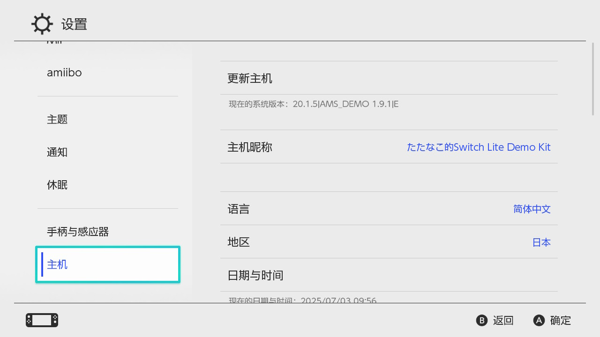
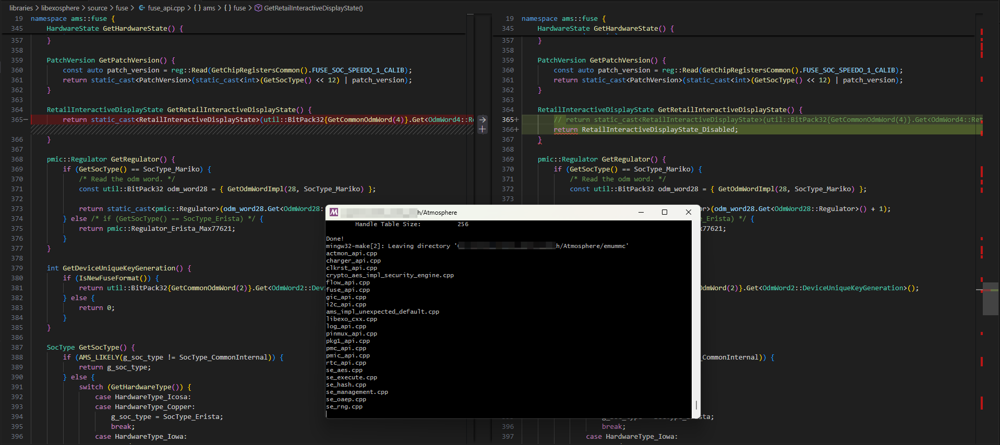

等了一天，商家给我发他的包了
但是这个包基于AMS 1.9.1，不支持最新的HOS 21.1.0
最后还是得自己编译
另外这个包给AMS字段后面强加了一个DEMO，感觉好不爽，DEMO标记应该加在后面才对

但是这个包基于AMS 1.9.1，不支持最新的HOS 21.1.0
最后还是得自己编译
另外这个包给AMS字段后面强加了一个DEMO，感觉好不爽，DEMO标记应该加在后面才对


警惕海鲜市场卖低价switch lite的商家
我不小心买到一台demo机，现在正在苦苦自行编译跳过保险丝检查的固件中
因为总是要等商家提供新的固件很麻烦……
不过小黄鱼商家是怎么弄到这些奇奇怪怪的硬件的，明明演示机存量应该比零售机要少啊……
或许是试图给零售机装演示机程序结果玩脱了烧了保险丝？ https://t.co/ttG5L2xHPb
我不小心买到一台demo机，现在正在苦苦自行编译跳过保险丝检查的固件中
因为总是要等商家提供新的固件很麻烦……
不过小黄鱼商家是怎么弄到这些奇奇怪怪的硬件的，明明演示机存量应该比零售机要少啊……
或许是试图给零售机装演示机程序结果玩脱了烧了保险丝？ https://t.co/ttG5L2xHPb